Calories and macros stay easy to read.
Calories, protein, carbs, and fat are grouped clearly, with the right amount of detail.
Fitness app for iPhone
Elyra brings nutrition, training, hydration, supplements, HealthKit steps, and community into one clear iPhone app that is quick to use.
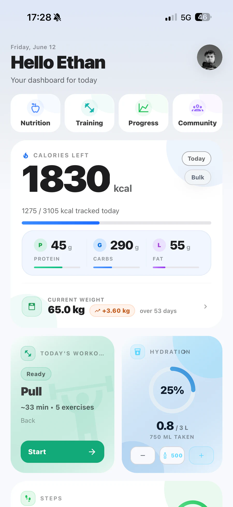
Nutrition
Food log, macros, food search, and barcode scan: Elyra organizes the essentials in one place.
Calories, protein, carbs, and fat are grouped clearly, with the right amount of detail.
Manual food search is more direct, easier to read, and simpler to use when you add meals.
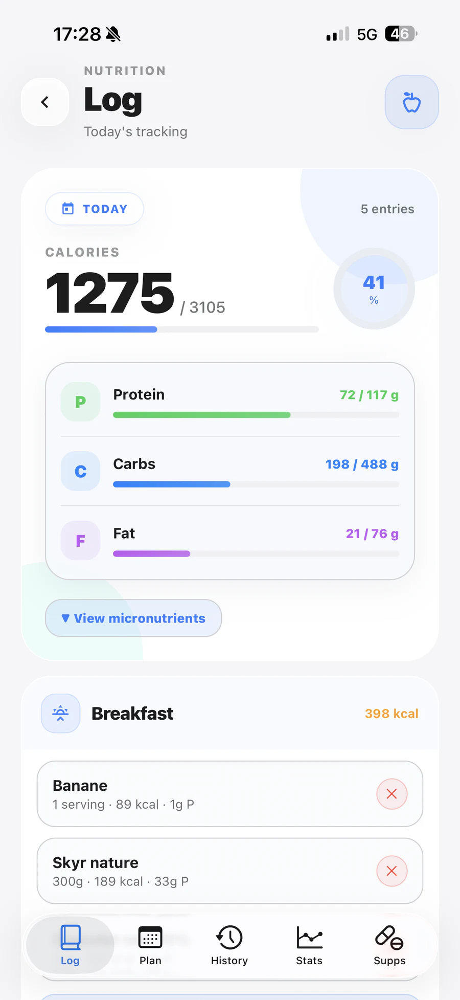
Add meals, mark what is planned, and keep your intake visible before the day gets busy.
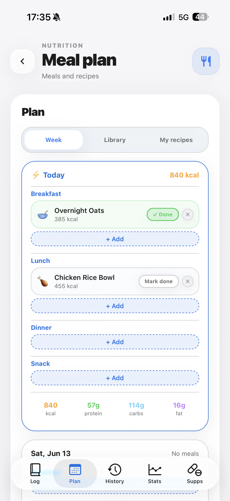
Calories, macros, and micronutrients stay readable so you can adjust with more precision.
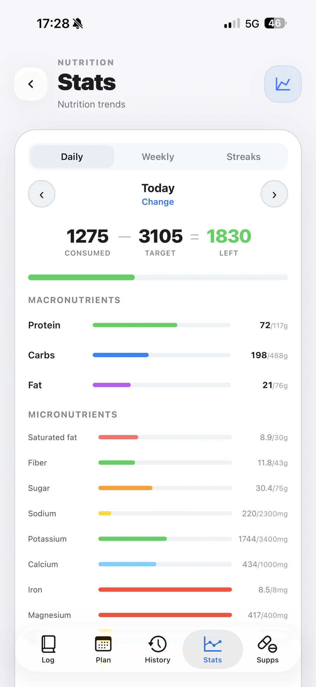
Scan a product barcode to find its nutrition details and add it directly to your day.
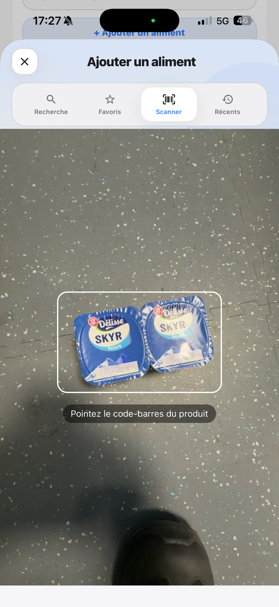
Training
Prepare your workouts, log your sets, and find your history without jumping between screens.
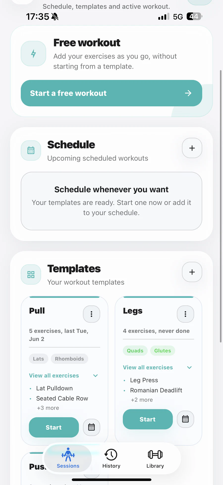
Saved workouts, favorite exercises, and past sessions stay easy to find.
Sets, weights, and rest stay visible, with Live Activity when the timer is running.
History helps you see what is improving, without needing to overthink it.
Details, tips, categories, and history keep every movement easy to review.
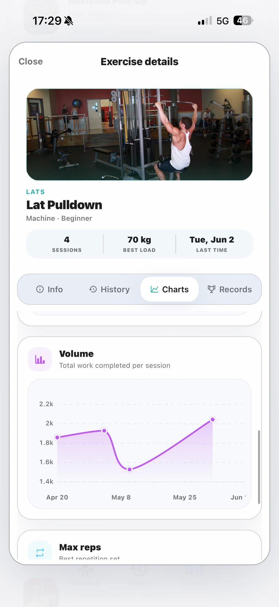
Name the exercise, pick the category, muscle, and equipment, then keep it in your library.
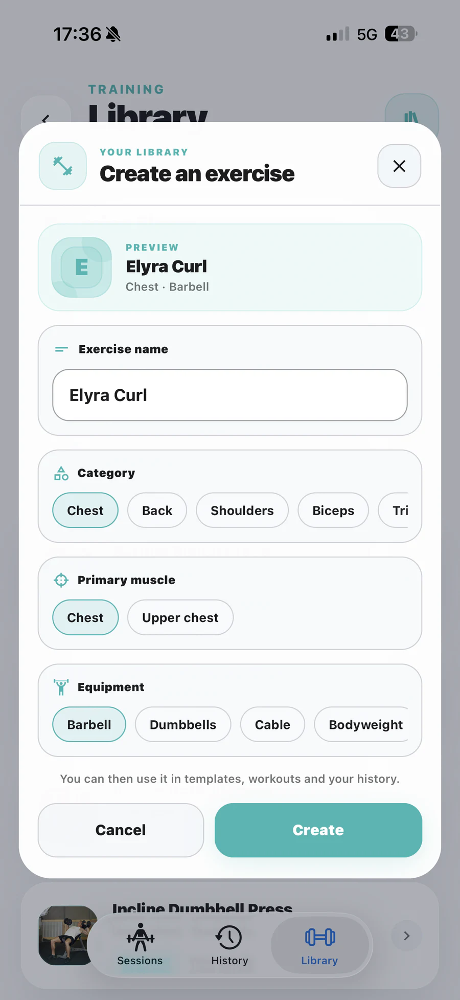
Weight, reps, rest, and sets stay in one clear place as your workout moves forward.
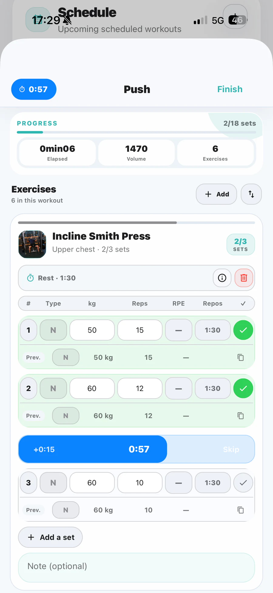
New in V1.1
V1.1 adds Live Activity rest timers, HealthKit step tracking, a public community feed, and a cleaner manual food search.
Start a workout, follow rest from the Lock Screen, and move to the next set without reopening the app every time.
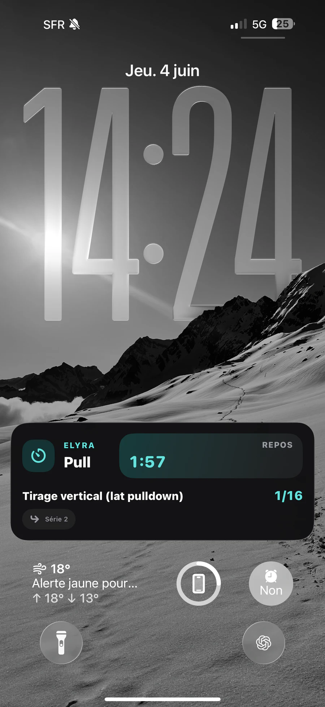
Elyra can show your steps, daily goal, and last seven days when you grant Health access.
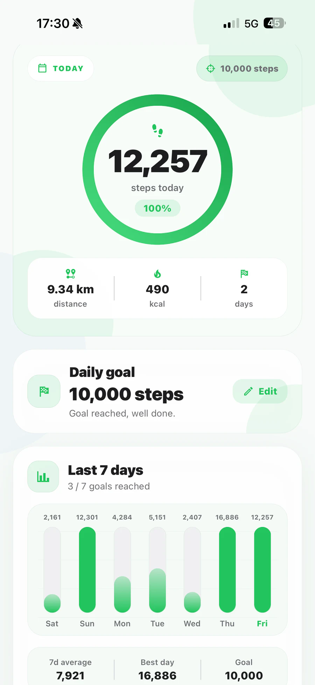
Publish a record, completed workout, or progress update, then keep reactions and filters in the same place.
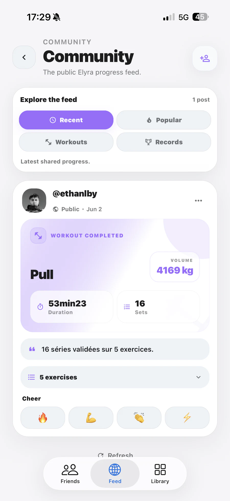
V1.1 also includes several bug fixes and optimizations for a more stable and faster everyday experience.
Progress
Weight, goals, workouts, steps, and hydration stay together so you can follow what is changing day after day.
Elyra brings your measurements, HealthKit steps, and history together so you can spot trends, adjust goals, and stay motivated.
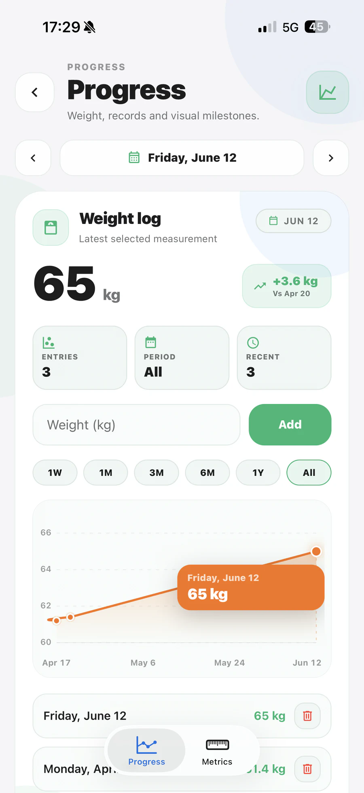
Add a glass, enter a precise volume, and review your last few days without leaving your routine.
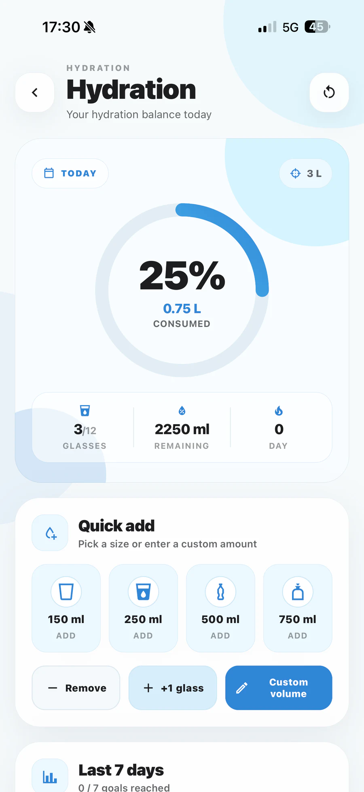
Steps, distance, estimated calories, and the daily goal complete your progress without adding another tool.
Elyra features
Elyra goes beyond basic tracking: public posts, per-side training, supplements, and progress all live in the same app.
Publish completed workouts, personal records, and progress updates. Reactions and filters keep the community readable, like an Elyra activity log.
Review your best performance for each exercise and see exactly what improves from one workout to the next.
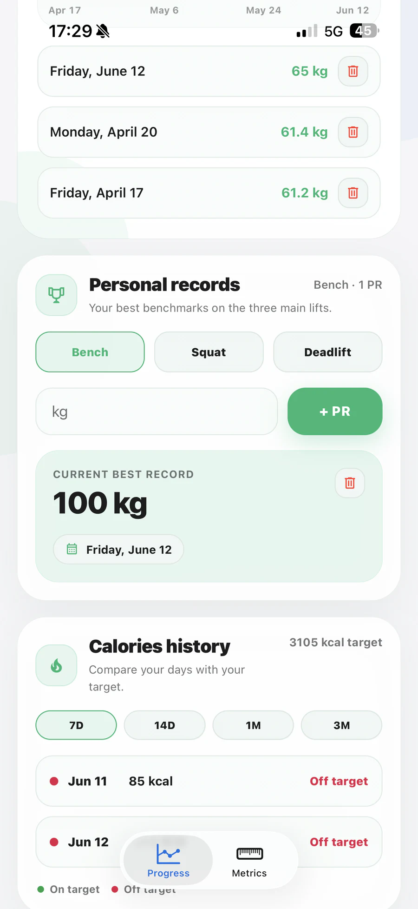
Keep track of supplements, review useful details, and keep a clear record of what you take.
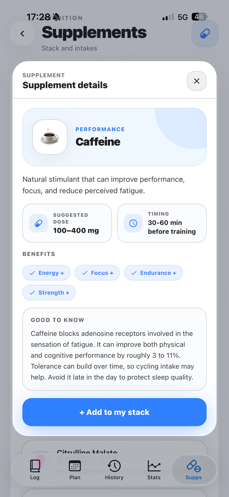
Why Elyra
Screens are made to be understood quickly, with the right information at the right moment.
Nutrition, training, HealthKit steps, community, supplements, and progress stay together without making tracking feel heavier.
Privacy, support, and account deletion pages stay accessible and easy to find.
FAQ
For people who want nutrition, training, and progress tracking, with community workouts and supplements in an app that feels clear and easy to use every day.
No. Elyra is a personal tracking tool. For medical goals, conditions, or specific constraints, ask a qualified professional.
Account data and information added inside the app, such as nutrition, training, HealthKit steps if allowed, community, supplements, progress, hydration, and profile details. The privacy policy explains those points in more detail.
Account deletion is available from inside the app. A dedicated page also explains the steps and the support contact if anything is difficult.
Elyra on iPhone
Elyra brings nutrition, training, HealthKit steps, community, supplements, and progress together so tracking your fitness does not become another chore.
V1.1 is available: Live Activity, HealthKit steps, and the new community feed. Follow the next releases.
No spam, max 1 email per month.